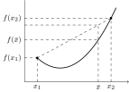
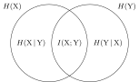

Lecture notes
Summary
- Every distribution is defined explicitly: an input distribution \(\P_{\rv{X}} \in \Pcal(\Xcal)\), a channel \(\P_{\rv{Y}|\rv{X}} \in \Pcal(\Ycal|\Xcal)\), the joint distribution \(\P_{\rv{X}}\P_{\rv{Y}|\rv{X}}\) and the output distribution \(\P_{\rv{Y}|\rv{X}}\circ\P_{\rv{X}}\), a mixture.
- Jensen’s inequality: \(\EE\bigl[f(\rv{X})\bigr] \ge f\bigl(\EE[\rv{X}]\bigr)\) for a convex \(f\).
- Information measures: entropy \(H(\P)\), cross-entropy \(H(\P\|\Q)\), divergence \(D(\P\|\Q) = H(\P\|\Q) - H(\P)\) and mutual information \(I(\rv{X};\rv{Y}) = D(\P_{\rv{X}\rv{Y}}\|\P_{\rv{X}}\P_{\rv{Y}})\). Their conditional versions are averages over the conditioning variable, and each measure has a chain rule.
- \(D(\P\|\Q) \ge 0\), with equality iff \(\P = \Q\). Hence \(I(\rv{X};\rv{Y}) \ge 0\), \(H(\P) \le H(\P\|\Q)\), conditioning reduces entropy and increases divergence, and processing reduces divergence and mutual information (data processing).
- \(H(\P)\) is concave in \(\P\); \(I(\P_{\rv{X}},\P_{\rv{Y}|\rv{X}})\) is concave in \(\P_{\rv{X}}\) and convex in \(\P_{\rv{Y}|\rv{X}}\); \(D(\P\|\Q)\) is jointly convex.
- Maximum entropy under \(\EE_\P\bigl[c(\rv{X})\bigr] \le a\): the Gibbs distribution \(q(x) = e^{-\beta c(x)}/Z\), e.g., the uniform distribution on a finite alphabet, and \(\Ncal(0,\sigma^2)\) under \(\EE_\P[\rv{X}^2] \le \sigma^2\).
Contents
- 1.1 Convex functions and Jensen’s inequality
- 1.2 Information measures
- 1.2.1 Entropy
- 1.2.2 Cross-entropy
- 1.2.3 Differential entropy and cross-entropy
- 1.2.4 Kullback–Leibler divergence
- 1.2.5 Mutual information
- 1.3 Properties
- 1.3.1 Positivity
- 1.3.2 Conditioning
- 1.3.3 Data processing
- 1.3.4 Convexity/Concavity
- 1.4 Maximum entropy
- 1.4.1 Finite alphabet
- 1.4.2 Continuous alphabet
- 1.4.3 General case
Outline of the course:
- Information measures
- Method of types
- Lossless source coding
- Lossy source coding
- Channel coding
- Information theory & statistics / machine learning
Notations:
- \(\log\): base 2; \(\ln x = \log x / \log e\).
- \(\Xcal, \Ycal, \Zcal\): alphabets.
- \(\Pcal(\Xcal)\): set of probability distributions over \(\Xcal\).
- \(\P, \Q \in \Pcal(\Xcal)\): probability measures on \(\Xcal\), used as distributions of random variables with values in \(\Xcal\); \(p\), \(q\): their pmfs (discrete \(\Xcal\)) or pdfs (continuous \(\Xcal\)). Probability measures, laws (distributions) of random variables, densities and kernels, and the difference between a probability measure and a distribution, are defined in the separate note Probability measures, kernels and laws.
- \(\P \ll \Q\): \(\P\) is absolutely continuous with respect to \(\Q\), i.e., \(q(x) = 0 \Rightarrow p(x) = 0\) for every \(x\) (for almost every \(x\) with pdfs). Then \(p(x)/q(x)\) is well defined for \(\P\)-almost every \(x\).
- \(\rv{X}, \rv{Y}, \rv{Z}, \rv{U}, \rv{V}, \rv{S}\): random variables.
- \(\P_{\rv{X}}\), \(\Q_{\rv{X}}\): distributions of \(\rv{X}\) (see below); \(p(x) \equiv p_{\rv{X}}(x)\).
\(\P_{\rv{Y}|\rv{X}}\): transition probability kernel (channel), i.e., a family of distributions in \(\Pcal(\Ycal)\) indexed by \(x \in \Xcal\),
\[\P_{\rv{Y}|\rv{X}} := \bigl(\, \underbrace{\P_{\rv{Y}|\rv{X}=x}}_{\text{probability measure of $\rv{Y}$}} \,\bigr)_{x\in\Xcal}, \qquad p(y\cond x) \equiv \P_{\rv{Y}|\rv{X}=x}(y) \equiv \P(y\cond \rv{X}=x).\]- \(\Pcal(\Ycal|\Xcal)\): set of channels from \(\Xcal\) to \(\Ycal\); \(\P_{\rv{Y}|\rv{X}} \in \Pcal(\Ycal|\Xcal)\).
For any \(\P_{\rv{X}} \in \Pcal(\Xcal)\) and \(\P_{\rv{Y}|\rv{X}} \in \Pcal(\Ycal|\Xcal)\), the joint distribution of \((\rv{X},\rv{Y})\) and the output distribution of the channel are
\[\begin{aligned} \P_{\rv{X}}\P_{\rv{Y}|\rv{X}} \equiv \P_{\rv{Y}|\rv{X}}\P_{\rv{X}} &\in \Pcal(\Xcal\times\Ycal), \qquad \text{with density } p(x)\,p(y\cond x), \\ \P_{\rv{Y}|\rv{X}}\circ\P_{\rv{X}} := \EE_{\tilde{\rv{X}}\sim\P_{\rv{X}}}\bigl[\P_{\rv{Y}|\rv{X}=\tilde{\rv{X}}}\bigr] &\in \Pcal(\Ycal), \qquad \text{the $\rv{Y}$-marginal of } \P_{\rv{X}}\P_{\rv{Y}|\rv{X}}. \end{aligned}\]The output distribution is a mixture of the distributions \(\P_{\rv{Y}|\rv{X}=x}\), \(x\in\Xcal\), with mixing distribution \(\P_{\rv{X}}\).
One random variable, several distributions.
A random variable \(\rv{X}\) with values in \(\Xcal\) is often considered under several distributions \(\P_{\rv{X}}, \Q_{\rv{X}} \in \Pcal(\Xcal)\), for instance the true distribution of a source and a model of it (the separate note explains how one random variable has several distributions). Each distribution is therefore defined explicitly, in order (\(\P_{\rv{X}}\), then \(\P_{\rv{Y}|\rv{X}}\), then \(\P_{\rv{X}}\P_{\rv{Y}|\rv{X}}\) and \(\P_{\rv{Y}|\rv{X}}\circ\P_{\rv{X}}\)), and the notation says which one is used, e.g., \(\rv{X}\sim\Q_{\rv{X}}\) or \(\EE_{\P}[\,\cdot\,]\).
Example (binary symmetric channel).
Let \(\Xcal = \Ycal = \{0,1\}\) and \(p, q, \varepsilon \in [0,1]\). We define, in this order,
- the input distribution \(\P_{\rv{X}} = \Bern(p)\), i.e., \(p(1) = p\) and \(p(0) = 1-p\);
- the channel \(\P_{\rv{Y}|\rv{X}} = \bigl(\Bern(\varepsilon), \Bern(1-\varepsilon)\bigr)\), i.e., \(\P_{\rv{Y}|\rv{X}=0} = \Bern(\varepsilon)\) and \(\P_{\rv{Y}|\rv{X}=1} = \Bern(1-\varepsilon)\): the input bit is flipped with probability \(\varepsilon\);
- the joint distribution \(\P_{\rv{X}}\P_{\rv{Y}|\rv{X}}\), whose pmf \(p(x)\,p(y\cond x)\) is given in the table below;
- the output distribution \(\P_{\rv{Y}} := \P_{\rv{Y}|\rv{X}}\circ\P_{\rv{X}} = (1-p)\Bern(\varepsilon) + p\Bern(1-\varepsilon) = \Bern(p\star\varepsilon)\), with \(p\star\varepsilon := p(1-\varepsilon) + (1-p)\varepsilon\), given by the column sums of the table;
- the reverse channel \(\P_{\rv{X}|\rv{Y}}\), with pmf \(p(x\cond y) = p(x)\,p(y\cond x)/p(y)\), so that \(\P_{\rv{Y}}\P_{\rv{X}|\rv{Y}} = \P_{\rv{X}}\P_{\rv{Y}|\rv{X}}\); for example, \(\P_{\rv{X}|\rv{Y}=1} = \Bern\bigl(p(1-\varepsilon)/(p\star\varepsilon)\bigr)\).
| \(y = 0\) | \(y = 1\) | \(\P_{\rv{X}}\) | |
| \(x = 0\) | \((1-p)(1-\varepsilon)\) | \((1-p)\varepsilon\) | \(1-p\) |
| \(x = 1\) | \(p\varepsilon\) | \(p(1-\varepsilon)\) | \(p\) |
| \(\P_{\rv{Y}}\) | \(1-p\star\varepsilon\) | \(p\star\varepsilon\) |
With another input distribution \(\Q_{\rv{X}} = \Bern(q)\), the same channel gives another joint distribution \(\Q_{\rv{X}}\P_{\rv{Y}|\rv{X}}\) and another output distribution \(\P_{\rv{Y}|\rv{X}}\circ\Q_{\rv{X}} = \Bern(q\star\varepsilon)\). For \(p = \varepsilon = \frac12\), every entry of the table is \(\frac14\): \(\rv{X}\) and \(\rv{Y}\) are independent and uniform.
1.1 Convex functions and Jensen’s inequality
A set \(\Xcal\) (in a vector space) is a convex set if
For example, \(\Pcal(\Xcal)\) is a convex set: if \(p_1\) and \(p_2\) are pmfs (or pdfs), then \(\lambda p_1 + (1-\lambda) p_2\) is nonnegative and sums (or integrates) to \(\lambda + (1-\lambda) = 1\).
A function \(f\colon \Xcal \to \mathbb{R}\) on a convex set \(\Xcal\) is a convex function if

\(f\) is strictly convex if the inequality is strict whenever \(x_1 \ne x_2\) and \(\lambda\in(0,1)\).
\(f\) is a concave function if \(-f\) is convex.
Jensen’s inequality.
(Jensen)
For any convex function \(f\) and any distribution \(\P\) of \(\rv{X}\),
If \(f\) is concave, the inequality is reversed:
If \(f\) is strictly convex (or strictly concave), equality holds iff \(\rv{X}\) is constant \(\P\)-almost surely.
We give the proof for \(f\) defined on an interval of \(\mathbb{R}\), the case used in this course. Let \(m := \EE_\P[\rv{X}]\). A convex \(f\) lies above a line through \((m, f(m))\): there is a \(c\in\mathbb{R}\) such that \(f(x) \ge f(m) + c\,(x-m)\) for every \(x\) (if \(f\) is differentiable, \(c = f'(m)\) gives the tangent at \(m\)). Taking the expectation, \(\EE_\P\bigl[f(\rv{X})\bigr] \ge f(m) + c\,\bigl(\EE_\P[\rv{X}] - m\bigr) = f(m)\). If \(f\) is strictly convex, then \(f(x) > f(m) + c\,(x-m)\) for every \(x \ne m\) (otherwise, by strict convexity, \(f\) would be below the line at the midpoint of \(m\) and \(x\)), so equality forces \(\rv{X} = m\) \(\P\)-almost surely. For a concave \(f\), apply this to \(-f\).
Examples (sign of \(f''\)): \(x \mapsto \log x\) is strictly concave on \(x>0\), since \((\log x)'' = -\frac{\log e}{x^2} < 0\), and \(x \mapsto x\log x\) is strictly convex on \(x \ge 0\) (with \(0\log 0 := 0\)), since \((x\log x)'' = \frac{\log e}{x} > 0\) for \(x > 0\).
1.2 Information measures
- Entropy
- Cross-entropy
- Divergence
- Mutual information
1.2.1 Entropy
Let \(\rv{X}\in\Xcal\) be discrete, \(\rv{X}\sim\P_{\rv{X}}\).
- \(\displaystyle H(\rv{X}) \equiv H(\P_{\rv{X}}) := \EE_{\rv{X}\sim\P_{\rv{X}}}\Bigl[\log\frac{1}{p(\rv{X})}\Bigr] = \sum_{x\in\Xcal} p(x)\log\frac{1}{p(x)}\).
For \((\rv{X},\rv{Y}) \in \Xcal\times\Ycal\) with \((\rv{X},\rv{Y}) \sim \P_{\rv{X}\rv{Y}}\), the joint and conditional entropies are
- \(\displaystyle H(\rv{X},\rv{Y}) \equiv H(\P_{\rv{X}\rv{Y}}) := \EE_{\P_{\rv{X}\rv{Y}}}\Bigl[\log\frac{1}{p(\rv{X},\rv{Y})}\Bigr]\),
- \(\displaystyle H(\rv{X}\cond\rv{Y}) \equiv H(\P_{\rv{X}|\rv{Y}}\mid\P_{\rv{Y}}) := \EE_{\bar{\rv{Y}}\sim\P_{\rv{Y}}}\bigl[H(\P_{\rv{X}|\rv{Y}=\bar{\rv{Y}}})\bigr] = \EE_{\P_{\rv{X}\rv{Y}}}\Bigl[\log\frac{1}{p(\rv{X}\cond\rv{Y})}\Bigr]\).
The last equality holds since \(p(x,y) = p(y)\,p(x\cond y)\).
“Chain rule”:
i.e., in the conventional notation, \(H(\rv{X},\rv{Y}) = H(\rv{Y}) + H(\rv{X}\cond\rv{Y})\). Indeed, \(\log\frac{1}{p(x,y)} = \log\frac{1}{p(y)} + \log\frac{1}{p(x\cond y)}\); take the expectation under \(\P_{\rv{X}\rv{Y}}\). By induction, for \(\rv{X}^n\) (the chain rule with \(\rv{Y} = \rv{X}^{n-1}\) and \(\rv{X} = \rv{X}_n\)),
1.2.2 Cross-entropy
For \(\Xcal\) discrete, \(\P, \Q \in \Pcal(\Xcal)\) and \(\rv{X}\sim\P\),
and, for conditional distributions,
“Chain rule”:
Indeed, \(\log\frac{1}{q(x,y)} = \log\frac{1}{q(y)} + \log\frac{1}{q(x\cond y)}\); take the expectation under \(\P_{\rv{X}\rv{Y}} = \P_{\rv{X}|\rv{Y}}\P_{\rv{Y}}\), whose \(\rv{Y}\)-marginal is \(\P_{\rv{Y}}\). The formula for \(\rv{X}^n\) applies this repeatedly.
1.2.3 Differential entropy and cross-entropy
For \(\rv{X}\) continuous with density \(p\),
Examples:
- uniform: if \(\P = \mathrm{Unif}[0,a]\), then \(p(x) = \frac{1}{a}\) on \([0,a]\) and \(h(\P) = \log a\);
- Gaussian: if \(\P = \Ncal(\mu,\sigma^2)\), then \(\log\frac{1}{p(x)} = \log\sqrt{2\pi\sigma^2} + \frac{(x-\mu)^2}{2\sigma^2}\log e\), so that \(h(\P) = \log\sqrt{2\pi\sigma^2} + \frac12\log e = \log\sqrt{2\pi e\sigma^2}\).
Unlike \(H\), \(h\) can be negative (\(h(\rv{X}) \ngeq 0\) in general; e.g., \(\log a < 0\) for \(a < 1\)) and is “not scale-free”: \(h(a\rv{X}) = h(\rv{X}) + \log|a|\) for \(a \ne 0\), since \(a\rv{X}\) has the pdf \(y \mapsto p(y/a)/|a|\), so that \(h(a\rv{X}) = \EE_\P\bigl[\log\frac{|a|}{p(\rv{X})}\bigr]\). The differential cross-entropy \(h(\P\|\Q)\) and the conditional versions, such as \(h(\P_{\rv{X}|\rv{Y}}\|\Q_{\rv{X}|\rv{Y}}\mid\P_{\rv{Y}})\), are defined in the same way with densities, and the chain rules hold, with the same proofs, whenever the terms are finite.
1.2.4 Kullback–Leibler divergence
The Kullback–Leibler (KL) divergence, or relative entropy, is
If \(\Xcal\) is discrete, \(D(\P\|\Q) = H(\P\|\Q) - H(\P)\) whenever \(H(\P) < \infty\); if \(\P\) and \(\Q\) have pdfs, \(D(\P\|\Q) = h(\P\|\Q) - h(\P)\) whenever \(h(\P)\) is finite. Indeed, \(\log\frac{p(x)}{q(x)} = \log\frac{1}{q(x)} - \log\frac{1}{p(x)}\); take the expectation under \(\P\).
For joint distributions, since \(p(x,y) = p(x)\,p(y\cond x)\) and \(q(x,y) = q(x)\,q(y\cond x)\),
where the conditional divergence is
Then, we get the “chain rule”
and, by induction,
1.2.5 Mutual information
where \(\P_{\rv{X}\rv{Y}} = \P_{\rv{X}}\P_{\rv{Y}|\rv{X}} = \P_{\rv{Y}}\P_{\rv{X}|\rv{Y}}\), and \(\P_{\rv{X}}\), \(\P_{\rv{Y}}\) are the marginals of \(\P_{\rv{X}\rv{Y}}\). The last two equalities follow from the chain rule of \(D\), since \(\P_{\rv{X}}\P_{\rv{Y}} = \P_{\rv{Y}}\Q_{\rv{X}|\rv{Y}}\) with the constant channel \(\Q_{\rv{X}|\rv{Y}=y} := \P_{\rv{X}}\):
and in the same way with \(\rv{X}\) and \(\rv{Y}\) swapped. Similarly, the conditional mutual information is
These equalities follow in the same way, applied to \(\P_{\rv{X}\rv{Y}|\rv{Z}=z}\) for each \(z\) and averaged over \(\P_{\rv{Z}}\), with \(\P_{\rv{Z}}\P_{\rv{Y}|\rv{Z}} = \P_{\rv{Y}\rv{Z}}\) and \(\P_{\rv{Z}}\P_{\rv{X}|\rv{Z}} = \P_{\rv{X}\rv{Z}}\).
If \(\rv{X}\) is discrete and \(H(\rv{X}) < \infty\),
If \(\P_{\rv{X}|\rv{Y}=y}\) has a pdf \(p(\cdot\cond y)\) for \(\P_{\rv{Y}}\)-almost every \(y\) (then so does \(\P_{\rv{X}} = \P_{\rv{X}|\rv{Y}}\circ\P_{\rv{Y}}\), namely \(p(x) = \EE_{\bar{\rv{Y}}\sim\P_{\rv{Y}}}\bigl[p(x\cond\bar{\rv{Y}})\bigr]\)) and \(h(\rv{X})\), \(h(\rv{X}\cond\rv{Y})\) are finite, the same computation with pdfs gives \(I(\rv{X};\rv{Y}) = h(\rv{X}) - h(\rv{X}\cond\rv{Y})\).
If \(\rv{X}\) and \(\rv{Y}\) are both discrete with finite entropies, the entropies and the mutual information satisfy the Venn diagram relations

They follow from the chain rule in both orders and from \(I(\rv{X};\rv{Y}) = H(\rv{X}) - H(\rv{X}\cond\rv{Y})\), which also holds with \(\rv{X}\) and \(\rv{Y}\) swapped, since \(D(\P_{\rv{X}\rv{Y}}\|\P_{\rv{X}}\P_{\rv{Y}})\) is symmetric in \(\rv{X}\) and \(\rv{Y}\). The same relations hold with \(h\) in place of \(H\) if \((\rv{X},\rv{Y})\) has a pdf and all the terms are finite.
“Chain rule”:
and, applying it repeatedly,
1.3 Properties
1.3.1 Positivity
- \(H(\P) \ge 0\) for discrete \(\P\), since \(p(x) \le 1\), i.e., \(\log\frac{1}{p(x)} \ge 0\), for every \(x\).
If \(\P\not\ll\Q\), then \(D(\P\|\Q) = +\infty\). If \(\P\ll\Q\), then \(\EE_\Q\bigl[\frac{p(\rv{X})}{q(\rv{X})}\bigr] = \sum_{x:\,q(x)>0} p(x) = 1\) (an integral for pdfs) and, by Jensen’s inequality with the strictly convex function \(x\mapsto x\log x\),
\(\displaystyle D(\P\|\Q) = \EE_\Q\Bigl[\frac{p(\rv{X})}{q(\rv{X})}\log\frac{p(\rv{X})}{q(\rv{X})}\Bigr] \ge \Bigl(\EE_\Q\Bigl[\frac{p(\rv{X})}{q(\rv{X})}\Bigr]\Bigr) \log\Bigl(\EE_\Q\Bigl[\frac{p(\rv{X})}{q(\rv{X})}\Bigr]\Bigr) = 0\),
with equality iff \(p(\rv{X})/q(\rv{X}) = 1\) \(\Q\)-almost surely, i.e., \(\P = \Q\). Hence\[D(\P\|\Q) \ge 0 \qquad \circnum{\star} \qquad \text{with equality iff } \P = \Q.\]Since \(H(\P\|\Q) - H(\P) = D(\P\|\Q)\) when \(H(\P) < \infty\), we get
\[\begin{aligned} H(\P) &\le H(\P\|\Q), \quad \forall\,\P,\Q, \\ H(\P) &= \min_{\Q} H(\P\|\Q), \quad \text{attained at } \Q = \P. \end{aligned}\]- By \(\circnum{\star}\), \(I(\rv{X};\rv{Y}) \ge 0\), with equality iff \(\P_{\rv{X}\rv{Y}} = \P_{\rv{X}}\P_{\rv{Y}}\), i.e., \(\rv{X}\) and \(\rv{Y}\) are independent. Similarly, \(I(\rv{X};\rv{Z}\cond\rv{Y}) \ge 0\), with equality iff \(\P_{\rv{X}\rv{Z}|\rv{Y}} = \P_{\rv{X}|\rv{Y}}\P_{\rv{Z}|\rv{Y}}\) (\(\P_{\rv{Y}}\)-a.s.), i.e., \(\rv{X}\) and \(\rv{Z}\) are independent conditionally on \(\rv{Y}\), i.e., \(\rv{X}\to\rv{Y}\to\rv{Z}\) forms a Markov chain. Indeed, \(I(\rv{X};\rv{Z}\cond\rv{Y})\) is the average over \(\bar{\rv{Y}}\sim\P_{\rv{Y}}\) of \(D(\P_{\rv{X}\rv{Z}|\rv{Y}=\bar{\rv{Y}}}\|\P_{\rv{X}|\rv{Y}=\bar{\rv{Y}}}\P_{\rv{Z}|\rv{Y}=\bar{\rv{Y}}}) \ge 0\).
1.3.2 Conditioning
- \(H(\rv{X}) \ge H(\rv{X}\cond\rv{Y})\), i.e., \(H(\P_{\rv{X}}) \ge H(\P_{\rv{X}|\rv{Y}}\mid\P_{\rv{Y}})\): “conditioning reduces entropy”, since \(H(\rv{X}) - H(\rv{X}\cond\rv{Y}) = I(\rv{X};\rv{Y}) \ge 0\).
\(D(\P_{\rv{X}|\rv{Y}}\|\Q_{\rv{X}|\rv{Y}}\mid\P_{\rv{Y}}) \ge D(\tilde{\P}_{\rv{X}}\|\tilde{\Q}_{\rv{X}})\), where \(\begin{aligned}[t] \tilde{\P}_{\rv{X}} &= \EE_{\tilde{\rv{Y}}\sim\P_{\rv{Y}}}\bigl[\P_{\rv{X}|\rv{Y}=\tilde{\rv{Y}}}\bigr] \equiv \P_{\rv{X}|\rv{Y}}\circ\P_{\rv{Y}}, \\ \tilde{\Q}_{\rv{X}} &= \EE_{\tilde{\rv{Y}}\sim\P_{\rv{Y}}}\bigl[\Q_{\rv{X}|\rv{Y}=\tilde{\rv{Y}}}\bigr] \equiv \Q_{\rv{X}|\rv{Y}}\circ\P_{\rv{Y}}. \end{aligned}\)
Indeed, let \(\P_{\rv{X}\rv{Y}} = \P_{\rv{Y}}\P_{\rv{X}|\rv{Y}}\) and \(\Q_{\rv{X}\rv{Y}} = \P_{\rv{Y}}\Q_{\rv{X}|\rv{Y}}\), whose \(\rv{X}\)-marginals are \(\tilde{\P}_{\rv{X}}\) and \(\tilde{\Q}_{\rv{X}}\). The chain rule of \(D\), applied in both orders, gives\[\begin{aligned} D(\P_{\rv{X}|\rv{Y}}\|\Q_{\rv{X}|\rv{Y}}\mid\P_{\rv{Y}}) &= D(\P_{\rv{X}\rv{Y}}\|\Q_{\rv{X}\rv{Y}}) = D(\tilde{\P}_{\rv{X}}\|\tilde{\Q}_{\rv{X}}) + D(\P_{\rv{Y}|\rv{X}}\|\Q_{\rv{Y}|\rv{X}}\mid\tilde{\P}_{\rv{X}}) \\ &\ge D(\tilde{\P}_{\rv{X}}\|\tilde{\Q}_{\rv{X}}). \end{aligned}\]
1.3.3 Data processing
For any channel \(\P_{\rv{Y}|\rv{X}} \in \Pcal(\Ycal|\Xcal)\) and any \(\P_{\rv{X}}, \Q_{\rv{X}} \in \Pcal(\Xcal)\),
Indeed, let \(\tilde{\P}_{\rv{Y}} = \P_{\rv{Y}|\rv{X}}\circ\P_{\rv{X}}\) and \(\tilde{\Q}_{\rv{Y}} = \P_{\rv{Y}|\rv{X}}\circ\Q_{\rv{X}}\) be the \(\rv{Y}\)-marginals of \(\P_{\rv{X}}\P_{\rv{Y}|\rv{X}}\) and \(\Q_{\rv{X}}\P_{\rv{Y}|\rv{X}}\), and \(\tilde{\P}_{\rv{X}|\rv{Y}}\), \(\tilde{\Q}_{\rv{X}|\rv{Y}}\) their conditionals. The chain rule of \(D\), applied in both orders, gives
For mutual information, if \(\rv{X}\to\rv{Y}\to\rv{Z}\) is a Markov chain, then \(I(\rv{X};\rv{Z}) \le I(\rv{X};\rv{Y})\). Indeed, \(I(\rv{X};\rv{Z}\cond\rv{Y}) = 0\) for a Markov chain, so
1.3.4 Convexity/Concavity
\(\P \mapsto H(\P)\) is concave on \(\Pcal(\Xcal)\). Let \(\rv{S}\sim\P_{\rv{S}} = \Bern(\lambda)\), \(\P_{\rv{X}|\rv{S}=0} = \P_0\) and \(\P_{\rv{X}|\rv{S}=1} = \P_1\), so that \(\P_{\rv{X}} = (1-\lambda)\P_0 + \lambda\P_1\). Then
\[\begin{aligned} \lambda H(\P_1) + (1-\lambda) H(\P_0) &= \sum_{s\in\{0,1\}} p(s)\, H(\P_{\rv{X}|\rv{S}=s}) \\ &= \EE_{\bar{\rv{S}}\sim\Bern(\lambda)}\bigl[H(\P_{\rv{X}|\rv{S}=\bar{\rv{S}}})\bigr] \\ &= H(\rv{X}\cond\rv{S}) \le H(\rv{X}) \equiv H(\P_{\rv{X}}) \\ &= H\bigl((1-\lambda)\P_0 + \lambda\P_1\bigr), \end{aligned}\]since conditioning reduces entropy.
\(\P_{\rv{X}} \mapsto I(\P_{\rv{X}},\P_{\rv{Y}|\rv{X}})\) is concave on \(\Pcal(\Xcal)\). With \(\rv{S}\) and \(\rv{X}\) as above, let \(\rv{Y}\) be the output of the channel \(\P_{\rv{Y}|\rv{X}}\), so that \(\rv{S}\to\rv{X}\to\rv{Y}\). Then
\[\begin{aligned} \lambda I(\P_1,\P_{\rv{Y}|\rv{X}}) + (1-\lambda) I(\P_0,\P_{\rv{Y}|\rv{X}}) &= I(\rv{X};\rv{Y}\cond\rv{S}) \le I(\rv{X},\rv{S};\rv{Y}) = I(\rv{X};\rv{Y}) \\ &= I(\P_{\rv{X}},\P_{\rv{Y}|\rv{X}}) = I\bigl((1-\lambda)\P_0 + \lambda\P_1,\P_{\rv{Y}|\rv{X}}\bigr), \end{aligned}\]by the chain rule and since \(I(\rv{S};\rv{Y}\cond\rv{X}) = 0\); the first equality holds since, given \(\rv{S} = s\), the joint distribution of \((\rv{X},\rv{Y})\) is \(\P_s\P_{\rv{Y}|\rv{X}}\).
\((\P,\Q) \mapsto D(\P\|\Q)\) is convex on \(\Pcal(\Xcal)\times\Pcal(\Xcal)\). With \(\rv{S}\) as above, let \(\P_{\rv{X}|\rv{S}=s} = \P_s\) and \(\Q_{\rv{X}|\rv{S}=s} = \Q_s\), \(s\in\{0,1\}\). By “conditioning”,
\[\begin{aligned} \lambda D(\P_1\|\Q_1) + (1-\lambda) D(\P_0\|\Q_0) &= D(\P_{\rv{X}|\rv{S}}\|\Q_{\rv{X}|\rv{S}}\mid\P_{\rv{S}}) \\ &\ge D(\tilde{\P}_{\rv{X}}\|\tilde{\Q}_{\rv{X}}) \\ &= D\bigl((1-\lambda)\P_0 + \lambda\P_1 \,\big\|\, (1-\lambda)\Q_0 + \lambda\Q_1\bigr). \end{aligned}\]\(\P_{\rv{Y}|\rv{X}} \mapsto I(\P_{\rv{X}},\P_{\rv{Y}|\rv{X}})\) is convex on \(\Pcal(\Ycal|\Xcal)\). This follows from the joint convexity of \(D\): for a fixed \(\P_{\rv{X}}\), both arguments of \(D\) in \(I(\P_{\rv{X}},\P_{\rv{Y}|\rv{X}}) = D(\P_{\rv{X}}\P_{\rv{Y}|\rv{X}}\|\P_{\rv{X}}\P_{\rv{Y}})\), where \(\P_{\rv{Y}} = \P_{\rv{Y}|\rv{X}}\circ\P_{\rv{X}}\), are linear in \(\P_{\rv{Y}|\rv{X}}\). Explicitly, let \(\P_{\rv{Y}|\rv{X}} = (1-\lambda)\P^{(0)}_{\rv{Y}|\rv{X}} + \lambda\P^{(1)}_{\rv{Y}|\rv{X}}\) with \(\P^{(0)}_{\rv{Y}|\rv{X}}, \P^{(1)}_{\rv{Y}|\rv{X}} \in \Pcal(\Ycal|\Xcal)\). Then \(\P_{\rv{Y}} = (1-\lambda)\P^{(0)}_{\rv{Y}} + \lambda\P^{(1)}_{\rv{Y}}\), where \(\P^{(s)}_{\rv{Y}} := \P^{(s)}_{\rv{Y}|\rv{X}}\circ\P_{\rv{X}}\), and
\[\begin{aligned} &\lambda I(\P_{\rv{X}},\P^{(1)}_{\rv{Y}|\rv{X}}) + (1-\lambda) I(\P_{\rv{X}},\P^{(0)}_{\rv{Y}|\rv{X}}) \\ &\qquad= \lambda D(\P_{\rv{X}}\P^{(1)}_{\rv{Y}|\rv{X}}\|\P_{\rv{X}}\P^{(1)}_{\rv{Y}}) + (1-\lambda) D(\P_{\rv{X}}\P^{(0)}_{\rv{Y}|\rv{X}}\|\P_{\rv{X}}\P^{(0)}_{\rv{Y}}) \\ &\qquad\ge D\bigl((1-\lambda)\P_{\rv{X}}\P^{(0)}_{\rv{Y}|\rv{X}} + \lambda\P_{\rv{X}}\P^{(1)}_{\rv{Y}|\rv{X}} \,\big\|\, (1-\lambda)\P_{\rv{X}}\P^{(0)}_{\rv{Y}} + \lambda\P_{\rv{X}}\P^{(1)}_{\rv{Y}}\bigr) \\ &\qquad= D(\P_{\rv{X}}\P_{\rv{Y}|\rv{X}}\|\P_{\rv{X}}\P_{\rv{Y}}) \\ &\qquad= I(\P_{\rv{X}},\P_{\rv{Y}|\rv{X}}). \end{aligned}\]
1.4 Maximum entropy
The method relies on the following equivalence, which holds since \(D(\P\|\Q) = H(\P\|\Q) - H(\P)\) (with \(h\) in place of \(H\) for pdfs): for any \(\P\) and \(\Q\),
1.4.1 Finite alphabet
Let \(|\Xcal| = M\). Take \(\Q \in \Pcal(\Xcal)\) uniform, \(q(x) = \dfrac{1}{M}\). Then
with equality iff \(\P = \Q\) is uniform.
1.4.2 Continuous alphabet
Which \(\P\) with \(\EE_\P[\rv{X}^2] \le \sigma^2\) maximizes \(h(\P)\)? Take \(\Q = \Ncal(0,\sigma^2)\). Then
with equality iff \(\P = \Q = \Ncal(0,\sigma^2)\).
1.4.3 General case
Which \(\P\) with \(\EE_\P\bigl[c(\rv{X})\bigr] \le a\) maximizes \(h(\P)\), for a cost function \(c \ge 0\)? Take
with \(\beta \ge 0\) chosen such that \(\EE_\Q\bigl[c(\rv{X})\bigr] = a\) (or \(\beta = 0\) if \(\EE_\Q\bigl[c(\rv{X})\bigr] \le a\) already holds for \(\beta = 0\)). Then
since \(\beta\,\EE_\P\bigl[c(\rv{X})\bigr] \le \beta a = \beta\,\EE_\Q\bigl[c(\rv{X})\bigr]\), with equality iff \(\P = \Q\). This \(\Q\) is called the Gibbs distribution, \(\beta\) the inverse temperature, and \(Z\) the partition function. The same argument holds for a discrete \(\Xcal\), with a sum in place of the integral and \(H\) in place of \(h\). Both examples above are Gibbs distributions: \(c(x) = 0\) (no constraint) with \(\beta = 0\) on a finite \(\Xcal\) gives the uniform \(\Q\), and \(c(x) = x^2\) with \(\beta = \frac{1}{2\sigma^2}\) gives \(\Q = \Ncal(0,\sigma^2)\) (on \(\Xcal = \mathbb{R}\), \(Z < \infty\) forces \(\beta > 0\)).
Quiz
22 questions · one correct answer each
Pick an answer to check it. Your answers are kept in this browser only.
0 of 22 answered
-
Let \(\Xcal = \Ycal = \{0,1\}\), \(\P_{\rv{X}} = \Bern(p)\), and let \(\P_{\rv{Y}|\rv{X}}\) be the binary symmetric channel with crossover probability \(\varepsilon\), i.e., \(\P_{\rv{Y}|\rv{X}=0} = \Bern(\varepsilon)\) and \(\P_{\rv{Y}|\rv{X}=1} = \Bern(1-\varepsilon)\). What is the output distribution \(\P_{\rv{Y}|\rv{X}}\circ\P_{\rv{X}}\)?
-
In the setting of Question 1, what is the pmf of the joint distribution \(\P_{\rv{X}}\P_{\rv{Y}|\rv{X}}\) at \((x,y) = (1,0)\)?
-
In the setting of Question 1, let \(p\star\varepsilon := p(1-\varepsilon) + (1-p)\varepsilon\). What is the reverse channel at \(y = 0\), i.e., \(\P_{\rv{X}|\rv{Y}=0}\)?
-
Let \(\P_{\rv{X}} = \Bern(\tfrac12)\) and \(\Q_{\rv{X}} = \Bern(\tfrac14)\) be two distributions of \(\rv{X}\), and let \(\P_{\rv{Y}|\rv{X}}\) be the binary symmetric channel of Question 1 with \(0 < \varepsilon < \tfrac12\). Which statement is true?
-
Let \(\P_{\rv{X}}\) be uniform on \(\Xcal = \{-1,+1\}\) and \(\P_{\rv{Y}|\rv{X}=x} = \Ncal(x,1)\) for \(x\in\Xcal\). What is the output distribution \(\P_{\rv{Y}|\rv{X}}\circ\P_{\rv{X}}\)?
-
Let \(\P\) be a pmf on \(\Xcal\) with support \(\mathcal{S} := \{x : p(x) > 0\}\). Jensen’s inequality for the concave function \(\log\) gives \(H(\P) = \EE_\P\bigl[\log\frac{1}{p(\rv{X})}\bigr] \le \log\EE_\P\bigl[\frac{1}{p(\rv{X})}\bigr]\). What is the right-hand side?
-
Let \(\P = \bigl[\tfrac12, \tfrac14, \tfrac14\bigr]\) and let \(\Q\) be uniform on \(\Xcal = \{a,b,c\}\). What is the cross-entropy \(H(\P\|\Q)\), in bits?
-
Let \(\P = \Bern(\tfrac12)\) and \(\Q = \Bern(\tfrac14)\). Which statement is true, in bits?
-
Let \(\P = \bigl[\tfrac12, \tfrac12, 0\bigr]\) and \(\Q = \bigl[\tfrac13, \tfrac13, \tfrac13\bigr]\) on \(\Xcal = \{a,b,c\}\). Which statement is true?
-
Let \(\P_{\rv{Y}} = \Bern(\tfrac12)\), \(\P_{\rv{X}|\rv{Y}=0} = \Bern(0)\) (that is, \(\rv{X} = 0\) when \(\rv{Y} = 0\)) and \(\P_{\rv{X}|\rv{Y}=1} = \Bern(\tfrac12)\). What is \(H(\rv{X}\cond\rv{Y}) \equiv H(\P_{\rv{X}|\rv{Y}}\mid\P_{\rv{Y}})\), in bits?
-
Which equality is the chain rule of the KL divergence?
-
Let \(\rv{X}\) be uniform on \([0,\tfrac12]\). What are \(h(\rv{X})\) and \(h(4\rv{X})\), in bits?
-
Which expression is not equal to \(I(\rv{X};\rv{Y})\) in general?
-
Let \(\P_{\rv{Y}|\rv{X}}\) be the binary symmetric channel with crossover probability \(\varepsilon\), and let \(H_2(\varepsilon) := H\bigl(\Bern(\varepsilon)\bigr)\). What are the mutual informations \(I\bigl(\Bern(\tfrac12),\P_{\rv{Y}|\rv{X}}\bigr)\) and \(I\bigl(\Bern(0),\P_{\rv{Y}|\rv{X}}\bigr)\)?
-
Let \(\rv{X}\) and \(\rv{Y}\) be discrete with \(H(\rv{X}) = 1\), \(H(\rv{Y}) = 1.5\) and \(H(\rv{X},\rv{Y}) = 2\), in bits. What are \(I(\rv{X};\rv{Y})\) and \(H(\rv{Y}\cond\rv{X})\)?
-
For a fixed \(\P\in\Pcal(\Xcal)\), which \(\Q\in\Pcal(\Xcal)\) minimizes the cross-entropy \(H(\P\|\Q)\)?
-
Which inequality holds for all discrete \(\rv{X}\), \(\rv{Y}\), \(\rv{Z}\)?
-
Let \(\rv{X}\to\rv{Y}\to\rv{Z}\) be a Markov chain. Which statement is true?
-
Let \(\P_{\rv{X}} = \Bern(0)\), \(\Q_{\rv{X}} = \Bern(1)\), and let \(\P_{\rv{Y}|\rv{X}}\) be the binary symmetric channel with crossover probability \(\tfrac12\). What are \(D(\P_{\rv{X}}\|\Q_{\rv{X}})\) and \(D(\P_{\rv{Y}|\rv{X}}\circ\P_{\rv{X}}\|\P_{\rv{Y}|\rv{X}}\circ\Q_{\rv{X}})\)?
-
Which statement is true?
-
Among the distributions \(\P\) on \(\Xcal = \{0,1,2,\ldots\}\) with \(\EE_\P[\rv{X}] \le a\), for a given \(a > 0\), which one maximizes \(H(\P)\)?
-
Among the pdfs on \(\mathbb{R}\) with \(\EE_\P[\rv{X}^2] \le \sigma^2\), which statement is true?
Exercises
8 problems
-
Problem 1 One channel, two input distributions
Let \(\Xcal = \Ycal = \{0,1\}\) and \(\varepsilon\in[0,1]\). The Z-channel \(\P_{\rv{Y}|\rv{X}}\) is defined by \(\P_{\rv{Y}|\rv{X}=0} = \Bern(0)\) and \(\P_{\rv{Y}|\rv{X}=1} = \Bern(1-\varepsilon)\): a \(0\) is always received correctly, and a \(1\) is received as \(0\) with probability \(\varepsilon\). Let \(\P_{\rv{X}} = \Bern(p)\) and \(\Q_{\rv{X}} = \Bern(q)\).
- Give the pmfs of the joint distributions \(\P_{\rv{X}}\P_{\rv{Y}|\rv{X}}\) and \(\Q_{\rv{X}}\P_{\rv{Y}|\rv{X}}\) as \(2\times 2\) tables, and the output distributions \(\P_{\rv{Y}|\rv{X}}\circ\P_{\rv{X}}\) and \(\P_{\rv{Y}|\rv{X}}\circ\Q_{\rv{X}}\).
- Compute the reverse channels of both joint distributions. Are they equal?
- Show that \(I(\P_{\rv{X}},\P_{\rv{Y}|\rv{X}}) = H_2\bigl(p(1-\varepsilon)\bigr) - p\,H_2(\varepsilon)\). For \(\varepsilon = \tfrac12\), compare the values at \(p = \tfrac12\) and \(p = \tfrac25\).
- For \(p = \tfrac12\), \(q = \tfrac14\) and \(\varepsilon = \tfrac12\), compute \(D(\P_{\rv{X}}\|\Q_{\rv{X}})\) and \(D(\P_{\rv{Y}|\rv{X}}\circ\P_{\rv{X}}\|\P_{\rv{Y}|\rv{X}}\circ\Q_{\rv{X}})\), and check the data processing inequality.
-
Problem 2 Conditional measures are averages
Let \(\P_{\rv{Y}} = \Bern(\tfrac12)\), \(\P_{\rv{X}|\rv{Y}=0} = \Bern(\tfrac14)\) and \(\P_{\rv{X}|\rv{Y}=1} = \Bern(\tfrac34)\), and let \(\Q_{\rv{X}|\rv{Y}=0} = \Q_{\rv{X}|\rv{Y}=1} = \Bern(\tfrac12)\).
- Compute \(\P_{\rv{X}} := \P_{\rv{X}|\rv{Y}}\circ\P_{\rv{Y}}\), \(H(\P_{\rv{X}})\), \(H(\P_{\rv{X}|\rv{Y}}\mid\P_{\rv{Y}})\) and \(I(\rv{X};\rv{Y})\). Check that conditioning reduces entropy.
- Compute \(D(\P_{\rv{X}|\rv{Y}}\|\Q_{\rv{X}|\rv{Y}}\mid\P_{\rv{Y}})\) and \(D(\P_{\rv{X}|\rv{Y}}\circ\P_{\rv{Y}}\|\Q_{\rv{X}|\rv{Y}}\circ\P_{\rv{Y}})\). Check that conditioning increases divergence.
- Conditioning reduces entropy only on average. Give \(\P_{\rv{Y}}\) and \(\P_{\rv{X}|\rv{Y}}\) such that \(H(\P_{\rv{X}|\rv{Y}=y}) > H(\P_{\rv{X}})\) for some \(y\).
-
Problem 3 Chain rules for sequences
Let \(\rv{X}^n = [\rv{X}_1,\ldots,\rv{X}_n] \sim \P_{\rv{X}^n}\) with marginals \(\P_{\rv{X}_1},\ldots,\P_{\rv{X}_n}\) on a finite \(\Xcal\). For \(\P\in\Pcal(\Xcal)\), \(\P^n\) denotes the product distribution, with pmf \(\prod_{i=1}^n p(x_i)\).
- Show that \(H(\P^n) = n H(\P)\) and \(D(\P^n\|\Q^n) = n D(\P\|\Q)\).
- Show that \(H(\rv{X}^n) \le \sum_{i=1}^n H(\rv{X}_i)\), with equality iff \(\rv{X}_1,\ldots,\rv{X}_n\) are independent.
Let \(\Q_1,\ldots,\Q_n\in\Pcal(\Xcal)\), and let \(\Q_{\rv{X}^n}\) have pmf \(\prod_{i=1}^n q_i(x_i)\). Show that
\[\begin{aligned} D(\P_{\rv{X}^n}\|\Q_{\rv{X}^n}) &= D\bigl(\P_{\rv{X}^n}\|\P_{\rv{X}_1}\cdots\P_{\rv{X}_n}\bigr) + \sum_{i=1}^n D(\P_{\rv{X}_i}\|\Q_i) \\ &\ge \sum_{i=1}^n D(\P_{\rv{X}_i}\|\Q_i), \end{aligned}\]where \(\P_{\rv{X}_1}\cdots\P_{\rv{X}_n}\) is the product of the marginals.
-
Problem 4 Erasure channel and convexity
In the binary erasure channel, \(\Xcal = \{0,1\}\), \(\Ycal = \{0,1,\mathrm{e}\}\), and \(\P_{\rv{Y}|\rv{X}=x}\) gives \(\rv{Y} = x\) with probability \(1-\alpha\) and \(\rv{Y} = \mathrm{e}\) (erasure) with probability \(\alpha\).
- For \(\P_{\rv{X}} = \Bern(p)\), give the pmf of \(\P_{\rv{Y}|\rv{X}}\circ\P_{\rv{X}}\), and show that \(I(\P_{\rv{X}},\P_{\rv{Y}|\rv{X}}) = (1-\alpha) H_2(p)\). Which \(\P_{\rv{X}}\) maximizes it?
- Show that the erasure channel is the mixture \((1-\alpha)\P^{(0)}_{\rv{Y}|\rv{X}} + \alpha\P^{(1)}_{\rv{Y}|\rv{X}}\) of the noiseless channel \(\P^{(0)}_{\rv{Y}|\rv{X}}\) (\(\rv{Y} = \rv{X}\)) and the channel \(\P^{(1)}_{\rv{Y}|\rv{X}}\) that always erases. Check the convexity of \(I\) in the channel here.
- For \(\varepsilon\in[0,\tfrac12]\), write the binary symmetric channel with crossover probability \(\varepsilon\) as a mixture of the binary symmetric channels with crossover probabilities \(0\) and \(\tfrac12\). Deduce from the convexity of \(I\) in the channel that \(H_2(\varepsilon) \ge 2\varepsilon\).
-
Problem 5 Functions and data processing
Let \(\rv{X}\) be discrete and \(g\) a function on \(\Xcal\).
- Apply the chain rule to \(H\bigl(\rv{X}, g(\rv{X})\bigr)\) in both orders to show that \(H\bigl(g(\rv{X})\bigr) \le H(\rv{X})\), with equality iff \(g\) is one-to-one on the support of \(\P_{\rv{X}}\). Compute \(H(\rv{X})\) and \(H(\rv{X}^2)\) for \(\rv{X}\) uniform on \(\{-2,-1,0,1,2\}\).
- For \(\P_{\rv{X}},\Q_{\rv{X}}\in\Pcal(\Xcal)\), let \(\P_{g(\rv{X})}\) and \(\Q_{g(\rv{X})}\) be the distributions of \(g(\rv{X})\) when \(\rv{X}\sim\P_{\rv{X}}\) and when \(\rv{X}\sim\Q_{\rv{X}}\). Show that \(D(\P_{g(\rv{X})}\|\Q_{g(\rv{X})}) \le D(\P_{\rv{X}}\|\Q_{\rv{X}})\). Hint: write \(\P_{g(\rv{X})}\) as the output distribution of a channel.
- Let \(\rv{X}\to\rv{Y}\to\rv{Z}\) be a Markov chain. Show that \(I(\rv{X};\rv{Z}) \le I(\rv{Y};\rv{Z})\), in addition to \(I(\rv{X};\rv{Z}) \le I(\rv{X};\rv{Y})\), and that \(H(\rv{X}\cond\rv{Z}) \ge H(\rv{X}\cond\rv{Y})\).
-
Problem 6 Mixtures and the concavity of entropy
Let \(\P_0,\P_1\in\Pcal(\Xcal)\) on a finite \(\Xcal\), \(\lambda\in[0,1]\) and \(\P_\lambda := (1-\lambda)\P_0 + \lambda\P_1\). As in the lecture, let \(\rv{S}\sim\Bern(\lambda)\) and \(\P_{\rv{X}|\rv{S}=s} = \P_s\) for \(s\in\{0,1\}\).
- Show that \(\P_{\rv{X}|\rv{S}}\circ\P_{\rv{S}} = \P_\lambda\) and that \(H(\P_\lambda) - (1-\lambda)H(\P_0) - \lambda H(\P_1) = I(\rv{S};\rv{X})\).
- Show that \(I(\rv{S};\rv{X}) = (1-\lambda)D(\P_0\|\P_\lambda) + \lambda D(\P_1\|\P_\lambda)\).
- Deduce that \(0 \le H(\P_\lambda) - (1-\lambda)H(\P_0) - \lambda H(\P_1) \le H_2(\lambda)\). When does equality hold on each side?
-
Problem 7 Maximum entropy distributions
Use the Gibbs distribution of the lecture, with the constraint \(\EE_\P\bigl[c(\rv{X})\bigr] \le a\) for a given \(a > 0\).
- On \(\Xcal = \{0,1,2,\ldots\}\), find the pmf that maximizes \(H(\P)\) under \(\EE_\P[\rv{X}] \le a\), and show that the maximum is \((1+a)\log(1+a) - a\log a\).
- On \(\Xcal = [0,\infty)\), find the pdf that maximizes \(h(\P)\) under \(\EE_\P[\rv{X}] \le a\), and the maximum.
- On \(\Xcal = \mathbb{R}\), find the pdf that maximizes \(h(\P)\) under \(\EE_\P\bigl[|\rv{X}|\bigr] \le a\), and the maximum.
- On \(\Xcal = \mathbb{R}\), show that \(h(\P)\) is unbounded under \(\EE_\P[\rv{X}] \le a\). Which assumption of the lecture fails?
-
Problem 8 Cross-entropy as a loss
A label \(\rv{Y}\in\Ycal\) is predicted from a feature \(\rv{X}\in\Xcal\), both finite, with \((\rv{X},\rv{Y})\sim\P_{\rv{X}}\P_{\rv{Y}|\rv{X}}\). A model \(\Q_{\rv{Y}|\rv{X}}\in\Pcal(\Ycal|\Xcal)\) is chosen to minimize the expected log-loss \(L(\Q_{\rv{Y}|\rv{X}}) := \EE_{\P_{\rv{X}}\P_{\rv{Y}|\rv{X}}}\bigl[\log\frac{1}{q(\rv{Y}\cond\rv{X})}\bigr]\).
- Show that \(L(\Q_{\rv{Y}|\rv{X}}) = H(\P_{\rv{Y}|\rv{X}}\|\Q_{\rv{Y}|\rv{X}}\mid\P_{\rv{X}}) = H(\P_{\rv{Y}|\rv{X}}\mid\P_{\rv{X}}) + D(\P_{\rv{Y}|\rv{X}}\|\Q_{\rv{Y}|\rv{X}}\mid\P_{\rv{X}})\).
- Deduce that \(L(\Q_{\rv{Y}|\rv{X}}) \ge H(\rv{Y}\cond\rv{X})\), with equality iff \(\Q_{\rv{Y}|\rv{X}=x} = \P_{\rv{Y}|\rv{X}=x}\) for every \(x\) with \(p(x) > 0\).
- A model that ignores the feature has \(\Q_{\rv{Y}|\rv{X}=x} = \Q_{\rv{Y}}\) for every \(x\). Show that the best such model is \(\Q_{\rv{Y}} = \P_{\rv{Y}|\rv{X}}\circ\P_{\rv{X}}\), and that its loss exceeds the smallest loss by \(I(\rv{X};\rv{Y})\).